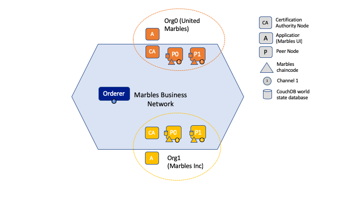

Section 1 - Overview of Hyperledger Fabric Smart Contract installation lab part 1¶
In this lab, you will work with the Marbles demo application, which is considered by many to be a de facto "hello world" application for getting started with Hyperledger Fabric. Hyperledger Fabric is one of several projects within the open-source Hyperledger collaborative effort hosted by the Linux Foundation. Hyperledger Fabric provides the distributed ledger, a.k.a. blockchain, technology that is the core of IBM Blockchain solutions and services.
Below is a diagram that depicts the blockchain network you will build and operate:

You will use Docker Compose to bring up a Hyperledger Fabric network in which two organizations will participate. There will be one orderer service for the entire network, and each organization will use its own certificate authority service and have two peer nodes. Each peer node will use CouchDB for its ledger store. Each peer node's CouchDB will run in a separate Docker container. That makes eleven Docker containers, as follows:
- 1 orderer service Docker container
- 2 certificate authority (CA) Docker containers (one for each organization)
- 4 peer node Docker containers (each of the two organizations has two peers)
- 4 CouchDB Docker containers (each peer node has its own separate CouchDB ledger store)
You will also bring up a twelfth Docker container that we will call the cli container. You will use it as a convenience to enter Hyperledger Fabric commands targeted to specific peers. You will see how this is done later in the lab.
The network you bring up will use Transport Layer Security (TLS) which provides secure, encrypted communications between the peer nodes and the orderer, just as most production implementations will require.
You will install the Marbles chaincode on the peer nodes, instantiate the chaincode, and invoke functions of the chaincode. I will explain later in the lab the difference between the install and instantiate actions and what each one does.
Section 2 - Description of the subsequent sections in Part 1¶
This section provides a brief description of the subsequent sections in Part 1 of the lab, where you will get hands-on experience with the Hyperledger Fabric command line interface (CLI). In most production implementations you would perform many of these functions through other means, such as programmatically through an Application Programming Interface (API) provided by a Hyperledger Fabric Software Development Kit (SDK), which the project provides for the Node.js, Java, Golang and Python programming languages, or perhaps through a user interface such as the one provided by the IBM Blockchain Platform. But using the CLI, as you will in this lab, is a great way to learn about how Hyperledger Fabric works.
- You will extract the artifacts necessary to run the lab in Section 3. All the artifacts necessary for the lab are provided in a compressed tarball- in essence, a zip file.
- You will use Docker Compose in Section 4 to bring up the twelve Docker containers that comprise the Hyperledger Fabric network. You will see that all twelve Docker containers that I mentioned in Section 1 are brought up with a single docker-compose command, and I will explain some of the more interesting bits of what is going on under the covers.
- You will create a channel in the Hyperledger Fabric network in Section 5. In Hyperledger Fabric, each channel is essentially its own blockchain.
- You will instruct each peer node to join the channel in Section 6. We will join all four Peer nodes to the channel. Peer nodes can be members of more than one channel, but for this lab you are only creating one channel.
- You will define an "anchor" peer for each organization in the channel in Section 7. An anchor peer for an organization is a peer that is known by all the other organizations in a channel. Not all peers for an organization need to be known by outside organizations. Peers not defined as anchor peers are visible only within their own organization.
- You will install the chaincode on the peer nodes in Section 8. Installing chaincode simply puts the chaincode executable on the file system of the peer. It is a necessary step before you execute that chaincode on the peer, but the next step is also required.
- You will instantiate the chaincode on the channel in Section 9. This step is a prerequisite to being able to run chaincode on a channel. It only needs to be performed on one peer that is a member of the channel. This causes a transaction to be recorded on the channel's blockchain to indicate that the chaincode can be run on the channel.
- You will invoke functions on the chaincode that will create, read, update and delete (CRUD) data stored on the blockchain in Section 10. Blocks of transactions in a blockchain are always added (i.e., created), and they can be read, but they are never, in normal operations, updated or deleted. However, although the blocks in a chain are not updated or deleted, the transactions themselves operate on Key/Value pairs that can have all CRUD operations performed on them. This collection of Key/Value pairs is often referred to as state data.
Section 3 - Extract the artifacts necessary to run the lab¶
Log in to your assigned Linux on Z Ubuntu instance with the instructions provided to you by your class instructor. If you are using Linux or MacOS you will likely be using ssh to log in via a Terminal window. If you are using Windows, you will most likely be using a PuTTY terminal session. If you are trying this lab at home, I am assuming you can figure out how to log in.
All of the following instructions in the lab assume that you have successfully logged in to the Linux on Z Ubuntu instance assigned to your team. As you proceed through the lab, you will have to be logged in to more than one terminal session. When that becomes necessary, simply follow the same procedure used to log in to your first terminal session.
Let's get started!
Step 3.1: Navigate to the home directory by entering cd ~ (the "tilde" character, i.e., '~', represents the user's home directory in Linux). This directory is also usually set in the $HOME environment variable, so cd $HOME will also usually get you to your home directory:
bcuser@ubuntu18042:~$ cd ~
bcuser@ubuntu18042:~$
Note: You may already be in your home directory prior to entering cd ~, in which case you'll just stay there- not a problem.
Step 3.2: Retrieve the zmarbles compressed tarball prepared for this lab with the following command:
bcuser@ubuntu18042:~$ wget https://raw.githubusercontent.com/ibm-blockchain-wsc/ImmersionWorkshop/master/zmarbles.tar.gz
--2019-04-28 14:57:58-- https://raw.githubusercontent.com/ibm-blockchain-wsc/ImmersionWorkshop/master/zmarbles.tar.gz
Resolving raw.githubusercontent.com (raw.githubusercontent.com)... 151.101.200.133
Connecting to raw.githubusercontent.com (raw.githubusercontent.com)|151.101.200.133|:443... connected.
HTTP request sent, awaiting response... 200 OK
Length: 10272273 (9.8M) [application/octet-stream]
Saving to: 'zmarbles.tar.gz'
zmarbles.tar.gz 100%[===================================================>] 9.80M --.-KB/s in 0.1s
2019-04-28 14:57:58 (77.3 MB/s) - 'zmarbles.tar.gz' saved [10272273/10272273]
bcuser@ubuntu18042:~$
Step 3.3: The zmarbles directory should not yet exist. Prove it with this ls command:
bcuser@ubuntu18042:~$ ls zmarbles
ls: cannot access 'zmarbles': No such file or directory
bcuser@ubuntu18042:~$
Step 3.4: Extract the zmarbles.tar.gz file which will create the missing directory (and lots of subdirectories). If you want to see the name of all of the files and directories that are extracted, add the "v" switch into the options in the command below. That is, use -xzvf instead of -xzf. So, enter the tar command below as shown, feeling free to substitute -xzvf for -xzf in the command (the "v" is for "verbose") :
bcuser@ubuntu18042:~$ tar -xzf zmarbles.tar.gz
bcuser@ubuntu18042:~$
Step 3.5: List the zmarbles directory with this command:
bcuser@ubuntu18042:~$ ls -l zmarbles
total 64
drwxr-xr-x 2 bcuser bcuser 4096 Apr 16 11:54 base
drwxrwxr-x 2 bcuser bcuser 4096 Jan 14 07:54 bin
drwxr-xr-x 2 bcuser bcuser 4096 Apr 16 12:24 channel-artifacts
drwxrwxr-x 2 bcuser bcuser 4096 Jul 3 2018 config
-rw-r--r-- 1 bcuser bcuser 12209 Jul 30 2018 configtx.yaml
-rw-r--r-- 1 bcuser bcuser 4175 Jul 30 2018 crypto-config.yaml
-rw-r--r-- 1 bcuser bcuser 6304 Apr 16 11:54 docker-compose-template.yaml
drwxr-xr-x 3 bcuser bcuser 4096 Jun 18 2017 examples
-rwxr-xr-x 1 bcuser bcuser 3587 Sep 24 2018 generateArtifacts.sh
drwxr-xr-x 2 bcuser bcuser 4096 Oct 1 2017 hostScripts
drwxrwxr-x 9 bcuser bcuser 4096 Apr 16 12:24 marblesUI
drwxr-xr-x 2 bcuser bcuser 4096 Jan 19 14:58 scripts
bcuser@ubuntu18042:~$
An explanation of the purpose of each of these files and directories is given here:
The base directory contains Docker Compose files that are included in the docker-compose-template.yaml file with the extends directive.
The bin directory contains two executable programs, cryptogen and configtxgen, that will be run later when you execute the generateArtifacts.sh script.
The channel-artifacts directory is empty, but it must exist when the generateArtifacts.sh script, which you will run later, invokes the configtxgen utility. The configtxgen utility generates input to channel configuration transactions, and it is expecting the channel-artifacts directory to exist.
The configtx.yaml file is input to the configtxgen utility
The cryto-config.yaml file is input to the cryptogen utiity, which is called by the generateArtifacts.sh script to create cryptographic material (in the form of X.509 certificates and public and private key pairs) used to identify peers, orderers, and administrative and regular users of a Hyperledger Fabric network.
The docker-compose-template.yaml file is used as a template file that the generateArtifacts.sh script will use to create the main Docker Compose template file, docker-compose.yaml, which contains definitions for all of the Docker containers that you will need.
The examples directory contains the actual Marbles chaincode within its subdirectory structure.
The generateArtifacts.sh script is used to generate channel configuration transaction input and to generate cryptographic material and it also creates docker-compose.yaml, using docker-compose-template.yaml as input.
The hostScripts directory is not used in this lab.
The marblesUI directory is used in Part 2 of this lab, in which you will be working with the browser-based user interface (UI) for Marbles.
The scripts directory contains a script named setpeer that you will be using throughout this lab from within the cli Docker container. setpeer will be explained in Section 5.
Section 4 - Bring up the twelve Docker containers that comprise the Hyperledger Fabric network¶
Step 4.1: Change to the zmarbles directory with the cd command:
bcuser@ubuntu18042:~$ cd zmarbles/
bcuser@ubuntu18042:~/zmarbles$
Step 4.2: You are going to run a script named generateArtifacts.sh that will create some configuration information that is necessary to get your Hyperledger Fabric network set up. There is one optional parameter you may pass to the script, and that is the name of the channel you will be creating. If you do not specify this parameter, the channel name defaults to mychannel. You may choose to specify your own channel name. E.g., if you wished to name your channel tim, then you would enter ./generateArtifacts.sh tim instead of just ./generateArtifacts.sh when directed below to enter the command.
Warning
If you pick your own channel name, it must start with a lowercase character, and only contain lowercase characters, numbers, or the dash ('-') character, or the period ('.').
So, enter the command below, optionally specifying a custom channel name (not shown here) as the lone argument to the generateArtifacts.sh script:
bcuser@ubuntu18042:~/zmarbles$ source ./generateArtifacts.sh # specify a custom channel name or accept the default value of 'mychannel'
Using cryptogen -> /home/bcuser/zmarbles/bin/cryptogen
##########################################################
##### Generate certificates using cryptogen tool #########
##########################################################
unitedmarbles.com
marblesinc.com
Using configtxgen -> /home/bcuser/zmarbles/bin/configtxgen
##########################################################
######### Generating Orderer Genesis block ##############
##########################################################
2019-04-28 15:01:07.988 EDT [common.tools.configtxgen] main -> WARN 001 Omitting the channel ID for configtxgen for output operations is deprecated. Explicitly passing the channel ID will be required in the future, defaulting to 'testchainid'.
2019-04-28 15:01:07.988 EDT [common.tools.configtxgen] main -> INFO 002 Loading configuration
2019-04-28 15:01:08.000 EDT [common.tools.configtxgen.localconfig] completeInitialization -> INFO 003 orderer type: solo
2019-04-28 15:01:08.000 EDT [common.tools.configtxgen.localconfig] Load -> INFO 004 Loaded configuration: /home/bcuser/zmarbles/configtx.yaml
2019-04-28 15:01:08.012 EDT [common.tools.configtxgen.localconfig] completeInitialization -> INFO 005 orderer type: solo
2019-04-28 15:01:08.012 EDT [common.tools.configtxgen.localconfig] LoadTopLevel -> INFO 006 Loaded configuration: /home/bcuser/zmarbles/configtx.yaml
2019-04-28 15:01:08.013 EDT [common.tools.configtxgen] doOutputBlock -> INFO 007 Generating genesis block
2019-04-28 15:01:08.014 EDT [common.tools.configtxgen] doOutputBlock -> INFO 008 Writing genesis block
#################################################################
### Generating channel configuration transaction 'channel.tx' ###
#################################################################
2019-04-28 15:01:08.077 EDT [common.tools.configtxgen] main -> INFO 001 Loading configuration
2019-04-28 15:01:08.088 EDT [common.tools.configtxgen.localconfig] Load -> INFO 002 Loaded configuration: /home/bcuser/zmarbles/configtx.yaml
2019-04-28 15:01:08.102 EDT [common.tools.configtxgen.localconfig] completeInitialization -> INFO 003 orderer type: solo
2019-04-28 15:01:08.102 EDT [common.tools.configtxgen.localconfig] LoadTopLevel -> INFO 004 Loaded configuration: /home/bcuser/zmarbles/configtx.yaml
2019-04-28 15:01:08.102 EDT [common.tools.configtxgen] doOutputChannelCreateTx -> INFO 005 Generating new channel configtx
2019-04-28 15:01:08.102 EDT [common.tools.configtxgen.encoder] NewChannelGroup -> WARN 006 Default policy emission is deprecated, please include policy specifications for the channel group in configtx.yaml
2019-04-28 15:01:08.103 EDT [common.tools.configtxgen.encoder] NewChannelGroup -> WARN 007 Default policy emission is deprecated, please include policy specifications for the channel group in configtx.yaml
2019-04-28 15:01:08.104 EDT [common.tools.configtxgen] doOutputChannelCreateTx -> INFO 008 Writing new channel tx
#################################################################
####### Generating anchor peer update for Org0MSP ##########
#################################################################
2019-04-28 15:01:08.170 EDT [common.tools.configtxgen] main -> INFO 001 Loading configuration
2019-04-28 15:01:08.181 EDT [common.tools.configtxgen.localconfig] Load -> INFO 002 Loaded configuration: /home/bcuser/zmarbles/configtx.yaml
2019-04-28 15:01:08.193 EDT [common.tools.configtxgen.localconfig] completeInitialization -> INFO 003 orderer type: solo
2019-04-28 15:01:08.193 EDT [common.tools.configtxgen.localconfig] LoadTopLevel -> INFO 004 Loaded configuration: /home/bcuser/zmarbles/configtx.yaml
2019-04-28 15:01:08.193 EDT [common.tools.configtxgen] doOutputAnchorPeersUpdate -> INFO 005 Generating anchor peer update
2019-04-28 15:01:08.193 EDT [common.tools.configtxgen] doOutputAnchorPeersUpdate -> INFO 006 Writing anchor peer update
#################################################################
####### Generating anchor peer update for Org1MSP ##########
#################################################################
2019-04-28 15:01:08.255 EDT [common.tools.configtxgen] main -> INFO 001 Loading configuration
2019-04-28 15:01:08.266 EDT [common.tools.configtxgen.localconfig] Load -> INFO 002 Loaded configuration: /home/bcuser/zmarbles/configtx.yaml
2019-04-28 15:01:08.277 EDT [common.tools.configtxgen.localconfig] completeInitialization -> INFO 003 orderer type: solo
2019-04-28 15:01:08.278 EDT [common.tools.configtxgen.localconfig] LoadTopLevel -> INFO 004 Loaded configuration: /home/bcuser/zmarbles/configtx.yaml
2019-04-28 15:01:08.278 EDT [common.tools.configtxgen] doOutputAnchorPeersUpdate -> INFO 005 Generating anchor peer update
2019-04-28 15:01:08.278 EDT [common.tools.configtxgen] doOutputAnchorPeersUpdate -> INFO 006 Writing anchor peer update
bcuser@ubuntu18042:~/zmarbles$
This script calls two Hyperledger Fabric utilites- cryptogen, which creates security material (certificates and keys) and configtxgen (Configuration Transaction Generator), which is called four times, to create four things:
- An orderer genesis block -- this will be the first block on the orderer's system channel. The location of this block is specified to the Orderer when it is started up via the ORDERER_GENERAL_GENESISFILE environment variable.
- A channel transaction -- later in the lab, this is sent to the orderer and will cause a new channel to be created when you run the peer channel create command.
- An anchor peer update for Org0MSP. An anchor peer is a peer that is set up so that peers from other organizations may communicate with it. The concept of anchor peers allows an organization to create multiple peers, perhaps to provide extra capacity or throughput or resilience (or all the above) but not have to advertise this to outside organizations.
- An anchor peer update for Org1MSP. You will perform the anchor peer updates for both Org0MSP and Org1MSP later in the lab via peer channel create commands.
Step 4.3: Issue the following command which will show you all files that were created by the configtxgen utility when it was called from inside generateArtifacts.sh:
bcuser@ubuntu18042:~/zmarbles$ ls -ltr channel-artifacts
total 28
-rw-r--r-- 1 bcuser bcuser 12995 Apr 28 15:01 genesis.block
-rw-r--r-- 1 bcuser bcuser 346 Apr 28 15:01 channel.tx
-rw-r--r-- 1 bcuser bcuser 285 Apr 28 15:01 Org0MSPanchors.tx
-rw-r--r-- 1 bcuser bcuser 282 Apr 28 15:01 Org1MSPanchors.tx
bcuser@ubuntu18042:~/zmarbles$
genesis.block will be passed to the orderer at startup, and will be used to configure the orderer's system channel. This file contains the x.509 signing certificates for every organization defined within the consortia that were specified within the configtx.yaml file when configtxgen was run. The system channel contains other values such as parameters defining when a block of transactions is cut- e.g., based on time, number of transactions, or block size- and these values serve as a template, that is, as defaults, for any additional channels that might be created, if a new channel creation request does not provide its own custom values.
channel.tx is the input for a configuration transaction that will create a channel. You will use this as input to a peer channel create request in Section 5.
Org0MSPanchors.tx and Org1MSPanchors.tx are inputs for configuration transactions that will define an anchor peer for Org0 and Org1 respectively. You will use these inputs in Section 7.
Step 4.4: Issue the following command which will show you all files that were created by the cryptogen utility when it was called from inside generateArtifacts.sh. This command will show one screen at a time and pause- press the space bar to scroll to the end, that is, until you get your command prompt back:
bcuser@ubuntu18042:~/zmarbles$ ls -ltrR crypto-config | more
.
. (output not shown here)
.
Actually, these files were created before the files listed in the prior step, Step 4.3, were created, because, among the many cryptographic artifacts created are the x.509 signing certificates for the organizations, which are baked into the genesis.block discussed in the prior step.
You can see that there is a dizzying set of directories and files, containing things like CA root certificates, signing certificates, TLS certificates, corresponding private keys, and public keys, for certificate authorities, organizations, administrative and general users. A thorough discussion of them is beyond the scope of this lab.
Note
This utiltity created crypto material for both organizations, including private keys that each organization would keep secret and never share with the other organizations. You have created this for both organizations on a single server for purposes of this lab, but in a production implementation each organization would create their own material separately so that they could indeed keep their private keys to themselves. Their public certificates, which are meant to be shared, are baked into the channel definitions for channels in which they participate. This allows peer nodes from all organizations in a channel to verify digital signatures of transaction requests and transaction endorsements from other organizations that are members of the channel.
Step 4.5: You are going to look inside the Docker Compose configuration file a little bit. Enter the following command:
bcuser@ubuntu18042:~/zmarbles$ vi -R docker-compose.yaml
You can enter Ctrl-f to scroll forward in the file and Ctrl-b to
scroll back in the file. The -R flag opens the file in read-only mode,
so if you accidentally change something in the file, it's okay. It will
not be saved.
The statements within docker-compose.yaml are in a markup language called YAML, which stands for Yet Another Markup Language. (Who says nerds do not have a sense of humor). We will go over some highlights here.
There are twelve "services", or Docker containers, defined within this
file. They all start in column 3 and have several statements to describe
them. For example, the first service defined is ca0, and there are
image, environment, ports, command, volumes, and
container_name statements that describe it. If you scroll down in the
file with Ctrl-f you will see all the services. Not every service has
the same statements describing it.
The twelve services are:
ca0 -- The certificate authority service for "Organization 0" (unitedmarbles.com)
ca1 -- The certificate authority service for "Organization 1" (marblesinc.com)
orderer.blockchain.com -- The single ordering service that both organizations will use
peer0.unitedmarbles.com -- The first peer node for "Organization 0"
peer1.unitedmarbles.com -- The second peer node for "Organization 0"
peer0.marblesinc.com -- The first peer node for "Organization 1"
peer1.marblesinc.com -- The second peer node for "Organization 1"
couchdb0 -- The CouchDB server for peer0.unitedmarbles.com
couchdb1 -- The CouchDB server for peer1.unitedmarbles.com
couchdb2 -- The CouchDB server for peer0.marblesinc.com
couchdb3 -- The CouchDB server for peer1.marblesinc.com
cli -- The Docker container from which you will enter Hyperledger Fabric command line interface (CLI) commands targeted towards a peer node.
I will describe how several statements work within the file, but time does not permit me to address every single line in the file!
image statements define which Docker image file the Docker container will be created from. Basically, the Docker image file is a static file that, once created, is read-only. A Docker container is based on a Docker image, and any changes to the file system within a Docker container are stored within the container. So, multiple Docker containers can be based on the same Docker image, and each Docker container keeps track of its own changes. For example, the containers built for the ca0 and ca1 service will both be based on the hyperledger/fabric-ca:1.4.1 Docker image because they both have this statement in their definition:
image: hyperledger/fabric-ca:1.4.1
environment statements define environment variables that are available to the Docker container. The Hyperledger Fabric processes make ample use of environment variables. In general, you will see that the certificate authority environment variables start with FABRIC_CA, the orderer's environment variables start with ORDERER_GENERAL, and the peer node's environment variables start with CORE. These variables control behavior of the Hyperledger Fabric code, and, in many cases, will override values that are specified in configuration files. All the peers and the orderer have an environment variable to specify that TLS is enabled- CORE_PEER_TLS_ENABLED=true for the peers and ORDERER_GENERAL_TLS_ENABLED=true for the orderer. You will notice there are other TLS-related variables to specify private keys, certificates and root certificates.
Note
Most of the TLS-related environment variables for the peer and orderer are specified in separate files that are brought in via the extends statement. Specifically, base/docker-compose.yaml for the orderer and base/peer-base.yaml for the peers. We'll discuss the extends statement shortly.
ports statements map ports on our Linux on IBM Z host to ports within the Docker container. The syntax is <host port>:<Docker container port>. For example, the service for ca1 has this port statement:
ports:
- "8054:7054"
This says that port 7054 in the Docker container for the ca1 node will be mapped to port 8054 on your Linux on IBM Z host. This is how you can run two CA nodes in two Docker containers and four peer nodes in four Docker containers and keep things straight- within each CA node they are both using port 7054, and within each peer node Docker container, they are all using port 7051 for the same thing, but if you want to get to one of the peers from your host or even the outside world, you would target the appropriate host-mapped port. Note: To see the port mappings for the peers you have to look in base/docker-compose.yaml. See if you can figure out why.
container_name statements are used to create hostnames that the Docker containers spun up by the docker-compose command use to communicate with each other. A separate, private network will be created by Docker where the 12 Docker containers can communicate with each other via the names specified by container_name. So, they do not need to worry about the port mappings from the ports statements- those are used for trying to get to the Docker containers from outside the private network created by Docker.
volumes statements are used to map file systems on the host to file systems within the Docker container. Just like with ports, the file system on the host system is on the left and the file system name mapped within the Docker container is on the right. For example, look at this statement from the ca0 service:
volumes:
- ./crypto-config/peerOrganizations/unitedmarbles.com/ca/:/etc/hyperledger/fabric-ca-server-config
The security-related files that were created from the previous step where you ran generateArtifacts.sh were all within the crypto-config directory on your Linux on IBM Z host. The prior volumes statement is how this stuff is made accessible to the ca0 service that will run within the Docker container. Similar magic is done for the other services as well, except for the CouchDB services.
extends statements are used by the peer nodes. What this does is merge in other statements from another file. For example, you may notice that the peer nodes do not contain an images statement. How does Docker know what Docker image file to base the container on? That is defined in the file, base/peer-base.yaml, specified in the extends section of base/docker-compose.yaml, which is specified in the extends section of docker-compose.yaml for the peer nodes.
command statements define what command is run when the Docker container is started. This is how the actual Hyperledger Fabric processes get started. You can define default commands when you create the Docker image. This is why you do not see command statements for the cli service or for the CouchDB services. For the peer nodes, the command statement is specified in the base/peer-base.yaml file.
working_dir statements define what directory the Docker container will be in when its startup commands are run. Again, defaults for this can be defined when the Docker image is created.
When you are done reviewing the docker-compose.yaml file, exit the
vi session by typing :q! (that's "colon", "q", "exclamation point")
which will exit the file and discard any changes you may have
accidentally made while browsing through the file. If :q! doesn't work
right away, you may have to hit the escape key first before trying it.
If that still doesn't work, ask an instructor for help- vi can be
tricky if you are not used to it.
If you would like to see what is in the base/docker-compose-base.yaml
and base/peer-base.yaml files I mentioned, take a quick peek with
vi -R base/docker-compose-base.yaml and vi -R base/peer-base.yaml
and exit with the :q! key sequence when you have had enough.
Step 4.6: Start the Hyperledger Fabric network by entering the command shown below:
bcuser@ubuntu18042:~/zmarbles$ docker-compose up --detach
Creating network "zmarbles_default" with the default driver
Pulling orderer.blockchain.com (hyperledger/fabric-orderer:1.4.1)...
1.4.1: Pulling from hyperledger/fabric-orderer
39653445334d: Pull complete
329bdf3df601: Pull complete
e1af42922173: Pull complete
4b9e5154055d: Pull complete
8ed6225295fd: Pull complete
11c7fddfdc0f: Pull complete
Pulling ca1 (hyperledger/fabric-ca:1.4.1)...
1.4.1: Pulling from hyperledger/fabric-ca
39653445334d: Already exists
329bdf3df601: Already exists
e1af42922173: Already exists
a5b6cc1abc77: Pull complete
1d0fabac8892: Pull complete
6eae46c3b75a: Pull complete
ce86d957bb82: Pull complete
a089155eb52f: Pull complete
Pulling ca0 (hyperledger/fabric-ca:1.4.1)...
1.4.1: Pulling from hyperledger/fabric-ca
Pulling couchdb0 (hyperledger/fabric-couchdb:s390x-0.4.15)...
s390x-0.4.15: Pulling from hyperledger/fabric-couchdb
39653445334d: Already exists
329bdf3df601: Already exists
e1af42922173: Already exists
38375a01635c: Pull complete
e0c199f48fe8: Pull complete
32ba5a82959e: Pull complete
7e91f8f93642: Pull complete
17039674b6c5: Pull complete
2ff3f86b6c77: Pull complete
ce5364742c8c: Pull complete
8202e4590853: Pull complete
2f293014c84a: Pull complete
9779e3b3aa0f: Pull complete
c78880840b57: Pull complete
66b99fceb3c4: Pull complete
abe937827dde: Pull complete
ad4c12835ee0: Pull complete
Pulling peer0.unitedmarbles.com (hyperledger/fabric-peer:1.4.1)...
1.4.1: Pulling from hyperledger/fabric-peer
39653445334d: Already exists
329bdf3df601: Already exists
e1af42922173: Already exists
4b9e5154055d: Already exists
22c8eabb9c48: Pull complete
b536383fde82: Pull complete
Pulling cli (hyperledger/fabric-tools:1.4.1)...
1.4.1: Pulling from hyperledger/fabric-tools
39653445334d: Already exists
329bdf3df601: Already exists
e1af42922173: Already exists
38375a01635c: Already exists
e0c199f48fe8: Already exists
32ba5a82959e: Already exists
7e91f8f93642: Already exists
5bcfc5abd027: Pull complete
3ff8871c88b1: Pull complete
9a7a331d670e: Pull complete
Creating couchdb0 ... done
Creating orderer.blockchain.com ... done
Creating couchdb3 ... done
Creating ca_Org1 ... done
Creating couchdb2 ... done
Creating ca_Org0 ... done
Creating couchdb1 ... done
Creating peer0.unitedmarbles.com ... done
Creating peer1.marblesinc.com ... done
Creating peer1.unitedmarbles.com ... done
Creating peer0.marblesinc.com ... done
Creating cli ... done
bcuser@ubuntu18042:~/zmarbles$
Note: Depending upon the circumstances under which you run this lab, the Hyperledger Fabric Docker images required may already exist on your system, in which case you may not observe the messages shown above that show the progress of the downloads.
Step 4.7: Verify that all twelve services are Up and none of them say Exited. The Exited status means something went wrong, and you should check with an instructor for help if you see any of them in Exited status.
If, however, all twelve of your Docker containers are in Up status, as in the output below, you are ready to proceed to the next section:
bcuser@ubuntu18042:~/zmarbles$ docker ps --all
CONTAINER ID IMAGE COMMAND CREATED STATUS PORTS NAMES
84b6c0ee74aa hyperledger/fabric-tools:1.4.1 "bash" 2 minutes ago Up 2 minutes cli
e6eabd9fd96d hyperledger/fabric-peer:1.4.1 "peer node start" 2 minutes ago Up 2 minutes 0.0.0.0:9051->7051/tcp, 0.0.0.0:9052->7052/tcp, 0.0.0.0:9053->7053/tcp peer0.marblesinc.com
8174f3021744 hyperledger/fabric-peer:1.4.1 "peer node start" 2 minutes ago Up 2 minutes 0.0.0.0:8051->7051/tcp, 0.0.0.0:8052->7052/tcp, 0.0.0.0:8053->7053/tcp peer1.unitedmarbles.com
1a22b9eb5be5 hyperledger/fabric-peer:1.4.1 "peer node start" 2 minutes ago Up 2 minutes 0.0.0.0:10051->7051/tcp, 0.0.0.0:10052->7052/tcp, 0.0.0.0:10053->7053/tcp peer1.marblesinc.com
11423ca89763 hyperledger/fabric-peer:1.4.1 "peer node start" 2 minutes ago Up 2 minutes 0.0.0.0:7051-7053->7051-7053/tcp peer0.unitedmarbles.com
18b9e5efbfc9 hyperledger/fabric-couchdb:s390x-0.4.15 "tini -- /docker-ent…" 2 minutes ago Up 2 minutes 4369/tcp, 9100/tcp, 0.0.0.0:6984->5984/tcp couchdb1
77288f8c0060 hyperledger/fabric-couchdb:s390x-0.4.15 "tini -- /docker-ent…" 2 minutes ago Up 2 minutes 4369/tcp, 9100/tcp, 0.0.0.0:7984->5984/tcp couchdb2
43214da184da hyperledger/fabric-ca:1.4.1 "sh -c 'fabric-ca-se…" 2 minutes ago Up 2 minutes 0.0.0.0:7054->7054/tcp ca_Org0
1ea639c77a3a hyperledger/fabric-ca:1.4.1 "sh -c 'fabric-ca-se…" 2 minutes ago Up 2 minutes 0.0.0.0:8054->7054/tcp ca_Org1
07df27e35368 hyperledger/fabric-couchdb:s390x-0.4.15 "tini -- /docker-ent…" 2 minutes ago Up 2 minutes 4369/tcp, 9100/tcp, 0.0.0.0:8984->5984/tcp couchdb3
93e0465394b6 hyperledger/fabric-orderer:1.4.1 "orderer" 2 minutes ago Up 2 minutes 0.0.0.0:7050->7050/tcp orderer.blockchain.com
4201915cc3b2 hyperledger/fabric-couchdb:s390x-0.4.15 "tini -- /docker-ent…" 2 minutes ago Up 2 minutes 4369/tcp, 9100/tcp, 0.0.0.0:5984->5984/tcp couchdb0
bcuser@ubuntu18042:~/zmarbles$
Step 4.8: Try this variant of the docker ps command that uses the --format* option to show only a subset of the information shown in the previous caommand:
bcuser@ubuntu18042:~/zmarbles$ docker ps --all --format '{{.Names}}\t\t {{.Status}}'
cli Up About a minute
peer1.unitedmarbles.com Up About a minute
peer0.marblesinc.com Up About a minute
peer0.unitedmarbles.com Up 2 minutes
peer1.marblesinc.com Up About a minute
couchdb1 Up About a minute
couchdb2 Up About a minute
ca_Org1 Up 2 minutes
ca_Org0 Up 2 minutes
orderer.blockchain.com Up 2 minutes
couchdb3 Up 2 minutes
couchdb0 Up 2 minutes
Section 5 - Create a channel in the Hyperledger Fabric network¶
In a Hyperledger Fabric v1.4.1 network, multiple channels can be created. Each channel can have its own policies for things such as requirements for endorsement and what organizations may join the channel. This allows for a subset of network participants to participate in their own channel.
Imagine a scenario where OrgA, OrgB and OrgC are three organizations participating in the network. You could set up a channel in which all three organizations participate. You could also set up a channel where only OrgA and OrgB participate. In this case, the peers in OrgC would not see the transactions occurring in that channel. OrgA could participate in another channel with only OrgC, in which case OrgB does not have visibility. And so on.
You could create channels with the same participants, but have different policies. For example, perhaps one channel with OrgA, OrgB, and OrgC could require all three organizations to endorse a transaction proposal, but another channel with OrgA, OrgB and OrgC could require just two, or even just one, of the three organizations to endorse a transaction proposal.
Note
A use case where only one organization would need to endorse a transaction proposal would be unusual, as the whole point of blockchain is for multiple organizations to agree on what is valid transaction, and allowing just one organization to consider a transaction valid sort of goes against the grain of that type of thinking, but I never say never (oops! I just said it twice) but it is technically possible. Most trust models would probably call for a majority, a super-majority (e.g. two-thirds), or even unanimous consent (100%) of the organizations in the channel to endorse a transaction proposal.
Note
A policy of requiring unanimous consent implies that each member organization should build an available and resilient infrastructure since if even one organization's peers are unavailable, then additions to the blockchain for that channel would grind to a halt. Then again, who runs in production without an available and resilient infrastructure anyway?
The decision on how many channels to create and what policies they have will usually be driven by the requirements of the particular business problem being solved.
Step 5.1: Access the cli Docker container:
bcuser@ubuntu18042:~/zmarbles$ docker exec --interactive --tty cli bash
root@84b6c0ee74aa:/opt/gopath/src/github.com/hyperledger/fabric/peer#
Observe that your command prompt changes when you enter the Docker container's shell.
The docker exec command runs a command against an existing Docker container. The --interactive and --tty arguments basically work together to say, "we want an interactive terminal session with this Docker container". cli is the name of the Docker container (this came from the container_name statement in the docker-compose.yaml file for the cli service). bash is the name of the command you want to enter. In other words, you are entering a Bash shell within the cli Docker container. For most of the rest of the lab, you will be entering commands within this Bash shell.
Instead of working as user bcuser on the ubuntu18042 server in the ~/zmarbles directory, you are now inside the Docker container with ID aaaaf5aa2798 (your ID will differ), working in the /opt/gopath/src/github.com/hyperledger/fabric/peer directory. It is no coincidence that that directory is the value of the working_dir statement for the cli service in your docker-compose.yaml file.
Step 5.2: There is no command to enter in this step, but read this explanation of convenience script that you will use repeatedly to point to a particular peer from the cli Docker container. Within the cli container, a convenience script named setpeer is provided in the scripts subdirectory of your current working directory. This script will set the environment variables to the values necessary to point to a particular peer. The script takes two arguments. The first argument is either 0 or 1 for Organization 0 or Organization 1 respectively, and the second argument is for either Peer 0 or Peer 1 of the organization selected by the first argument. Therefore, throughout the remainder of this lab, before sending commands to a peer, you will enter one of the following four valid combinations from within the cli Docker container, depending on which peer you want to run the command on:
source scripts/setpeer 0 0 # to target Org 0, peer 0 (peer0.unitedmarbles.com)
source scripts/setpeer 0 1 # to target Org 0, peer 1 (peer1.united marbles.com)
source scripts/setpeer 1 0 # to target Org 1, peer 0 (peer0.marblesinc.com)
source scripts/setpeer 1 1 # to target Org 1, peer 1 (peer1.marblesinc.com)
Step 5.3: Choose your favorite peer and use one of the four source scripts/setpeer commands listed in the prior step. Although you are going to join all four peers to our channel, you only need to issue the channel creation command once. You can issue it from any of the four peers, so pick your favorite peer and issue the source command. In this screen snippet, I have chosen Org 1, peer 1. Issue the command below, leaving the arguments '1 1' as is, or change it to one of the other valid combinations as described in the previous step:
root@84b6c0ee74aa:/opt/gopath/src/github.com/hyperledger/fabric/peer# source scripts/setpeer 1 1
CORE_PEER_TLS_KEY_FILE=/opt/gopath/src/github.com/hyperledger/fabric/peer/crypto/peerOrganizations/unitedmarbles.com/peers/peer0.unitedmarbles.com/tls/server.key
CORE_PEER_LOCALMSPID=Org1MSP
CORE_PEER_TLS_ENABLED=true
CORE_PEER_TLS_CERT_FILE=/opt/gopath/src/github.com/hyperledger/fabric/peer/crypto/peerOrganizations/unitedmarbles.com/peers/peer0.unitedmarbles.com/tls/server.crt
CORE_PEER_ID=cli
CORE_PEER_MSPCONFIGPATH=/opt/gopath/src/github.com/hyperledger/fabric/peer/crypto/peerOrganizations/marblesinc.com/users/Admin@marblesinc.com/msp
CORE_PEER_TLS_ROOTCERT_FILE=/opt/gopath/src/github.com/hyperledger/fabric/peer/crypto/peerOrganizations/marblesinc.com/peers/peer1.marblesinc.com/tls/ca.crt
CORE_PEER_ADDRESS=peer1.marblesinc.com:7051
CORE_VM_ENDPOINT=unix:///host/var/run/docker.sock
root@84b6c0ee74aa:/opt/gopath/src/github.com/hyperledger/fabric/peer#
The next to last environment variable listed, CORE_PEER_ADDRESS, determines to which peer your commands will be routed.
Step 5.4: The Hyperledger Fabric network is configured to require TLS, so when you enter your peer commands, you need to add a flag that indicates TLS is enabled, and you need to add an argument that points to the root signer certificate of the certificate authority for the orderer service.
Fortunately, an environment variable has been set for you within the CLI container that sets the flag (--tls argument) and points to the appropriate certificate (the --cafile argument) so that you can simply pass both arguments by specifying the single short environment variable name instead of having to enter the two arguments and the tediously long argument value for --cafile.
Enter this command now to see the value of this environment variable, and thank me later for setting this up for you:
root@84b6c0ee74aa:/opt/gopath/src/github.com/hyperledger/fabric/peer# echo $FABRIC_TLS
--tls --cafile /opt/gopath/src/github.com/hyperledger/fabric/peer/crypto/ordererOrganizations/blockchain.com/orderers/orderer.blockchain.com/msp/tlscacerts/tlsca.blockchain.com-cert.pem
root@84b6c0ee74aa:/opt/gopath/src/github.com/hyperledger/fabric/peer#
Step 5.5: Now enter this command:
root@84b6c0ee74aa:/opt/gopath/src/github.com/hyperledger/fabric/peer# peer channel create -o orderer.blockchain.com:7050 -f channel-artifacts/channel.tx $FABRIC_TLS -c $CHANNEL_NAME
2019-04-28 19:12:13.144 UTC [channelCmd] InitCmdFactory -> INFO 001 Endorser and orderer connections initialized
2019-04-28 19:12:13.180 UTC [cli.common] readBlock -> INFO 002 Received block: 0
root@84b6c0ee74aa:/opt/gopath/src/github.com/hyperledger/fabric/peer#
The last line before you get your command prompt back will contain the words "Received block: 0". This indicates that your channel creation was successful, and the peer received the initial, or genesis block for the channel, which is block 0. Programmers love to start counting things at zero instead of one- it makes them feel special.
Proceed to the next section where you will join each peer to the channel.
Section 6 - Instruct each peer node to join the channel¶
In the last section, you issued the peer channel create command from one of the peers. Now any peer that you want to join the channel may join- you will issue the peer channel join command from each peer.
For a peer to be eligible to join a channel, it must be a member of an organization that is authorized to join the channel. When you created your channel, you authorized Org0MSP and Org1MSP to join the channel. Each of your four peers belongs to one of those two organizations- two peers for each one- so they will be able to join successfully. If someone from an organization other than Org0MSP or Org1MSP attempted to join their peers to this channel, the attempt would fail.
You are going to repeat the following steps for each of the four peer nodes, in order to show that the peer successfully joined the channel:
- Use the scripts/setpeer script to point the CLI to the peer
- Use the peer channel list command to show that the peer is not joined to any channels
- Use the peer channel join command to join the peer to your channel
- Use the peer channel list command again to see that the peer has joined your channel
Step 6.1: Point the cli to peer0 for Org0MSP:
root@84b6c0ee74aa:/opt/gopath/src/github.com/hyperledger/fabric/peer# source scripts/setpeer 0 0
CORE_PEER_TLS_KEY_FILE=/opt/gopath/src/github.com/hyperledger/fabric/peer/crypto/peerOrganizations/unitedmarbles.com/peers/peer0.unitedmarbles.com/tls/server.key
CORE_PEER_LOCALMSPID=Org0MSP
CORE_PEER_TLS_ENABLED=true
CORE_PEER_TLS_CERT_FILE=/opt/gopath/src/github.com/hyperledger/fabric/peer/crypto/peerOrganizations/unitedmarbles.com/peers/peer0.unitedmarbles.com/tls/server.crt
CORE_PEER_ID=cli
CORE_PEER_MSPCONFIGPATH=/opt/gopath/src/github.com/hyperledger/fabric/peer/crypto/peerOrganizations/unitedmarbles.com/users/Admin@unitedmarbles.com/msp
CORE_PEER_TLS_ROOTCERT_FILE=/opt/gopath/src/github.com/hyperledger/fabric/peer/crypto/peerOrganizations/unitedmarbles.com/peers/peer0.unitedmarbles.com/tls/ca.crt
CORE_PEER_ADDRESS=peer0.unitedmarbles.com:7051
CORE_VM_ENDPOINT=unix:///host/var/run/docker.sock
root@84b6c0ee74aa:/opt/gopath/src/github.com/hyperledger/fabric/peer#
Step 6.2: Enter peer channel list and observe that no channels are returned at the end of the output:
root@84b6c0ee74aa:/opt/gopath/src/github.com/hyperledger/fabric/peer# peer channel list
2019-04-28 19:13:27.080 UTC [channelCmd] InitCmdFactory -> INFO 001 Endorser and orderer connections initialized
Channels peers has joined:
root@84b6c0ee74aa:/opt/gopath/src/github.com/hyperledger/fabric/peer#
Step 6.3: Issue peer channel join -b $CHANNEL_NAME.block to join the channel you set up when you ran generateArtifacts.sh a little while ago. Among the many things that script did, it exported an environment variable named $CHANNEL_NAME set to the channel name you specified (or mychannel if you did not specify your own name), and then the Docker Compose file is set up to pass this environment variable to the cli container. If you are still on the happy path, your output will look similar to this:
root@84b6c0ee74aa:/opt/gopath/src/github.com/hyperledger/fabric/peer# peer channel join -b $CHANNEL_NAME.block
2019-04-28 19:13:58.536 UTC [channelCmd] InitCmdFactory -> INFO 001 Endorser and orderer connections initialized
2019-04-28 19:13:58.618 UTC [channelCmd] executeJoin -> INFO 002 Successfully submitted proposal to join channel
root@84b6c0ee74aa:/opt/gopath/src/github.com/hyperledger/fabric/peer#
Step 6.4: Repeat the peer channel list command and now you should see your channel listed in the output:
root@84b6c0ee74aa:/opt/gopath/src/github.com/hyperledger/fabric/peer# peer channel list
2019-04-28 19:14:23.186 UTC [channelCmd] InitCmdFactory -> INFO 001 Endorser and orderer connections initialized
Channels peers has joined:
mychannel
root@84b6c0ee74aa:/opt/gopath/src/github.com/hyperledger/fabric/peer#
Step 6.5: Point the cli to peer1 for Org0MSP:
root@84b6c0ee74aa:/opt/gopath/src/github.com/hyperledger/fabric/peer# source scripts/setpeer 0 1
CORE_PEER_TLS_KEY_FILE=/opt/gopath/src/github.com/hyperledger/fabric/peer/crypto/peerOrganizations/unitedmarbles.com/peers/peer0.unitedmarbles.com/tls/server.key
CORE_PEER_LOCALMSPID=Org0MSP
CORE_PEER_TLS_ENABLED=true
CORE_PEER_TLS_CERT_FILE=/opt/gopath/src/github.com/hyperledger/fabric/peer/crypto/peerOrganizations/unitedmarbles.com/peers/peer0.unitedmarbles.com/tls/server.crt
CORE_PEER_ID=cli
CORE_PEER_MSPCONFIGPATH=/opt/gopath/src/github.com/hyperledger/fabric/peer/crypto/peerOrganizations/unitedmarbles.com/users/Admin@unitedmarbles.com/msp
CORE_PEER_TLS_ROOTCERT_FILE=/opt/gopath/src/github.com/hyperledger/fabric/peer/crypto/peerOrganizations/unitedmarbles.com/peers/peer1.unitedmarbles.com/tls/ca.crt
CORE_PEER_ADDRESS=peer1.unitedmarbles.com:7051
CORE_VM_ENDPOINT=unix:///host/var/run/docker.sock
root@84b6c0ee74aa:/opt/gopath/src/github.com/hyperledger/fabric/peer#
Step 6.6: Enter peer channel list and observe that no channels are returned at the end of the output:
root@84b6c0ee74aa:/opt/gopath/src/github.com/hyperledger/fabric/peer# peer channel list
2019-04-28 19:15:21.894 UTC [channelCmd] InitCmdFactory -> INFO 001 Endorser and orderer connections initialized
Channels peers has joined:
root@84b6c0ee74aa:/opt/gopath/src/github.com/hyperledger/fabric/peer#
Step 6.7: Issue peer channel join -b $CHANNEL_NAME.block to join your channel. Your output should look similar to this:
root@84b6c0ee74aa:/opt/gopath/src/github.com/hyperledger/fabric/peer# peer channel join -b $CHANNEL_NAME.block
2019-04-28 19:15:53.751 UTC [channelCmd] InitCmdFactory -> INFO 001 Endorser and orderer connections initialized
2019-04-28 19:15:53.851 UTC [channelCmd] executeJoin -> INFO 002 Successfully submitted proposal to join channel
root@84b6c0ee74aa:/opt/gopath/src/github.com/hyperledger/fabric/peer#
Step 6.8: Repeat the peer channel list command and now you should see your channel listed:
root@84b6c0ee74aa:/opt/gopath/src/github.com/hyperledger/fabric/peer# peer channel list
2019-04-28 19:16:19.287 UTC [channelCmd] InitCmdFactory -> INFO 001 Endorser and orderer connections initialized
Channels peers has joined:
mychannel
root@84b6c0ee74aa:/opt/gopath/src/github.com/hyperledger/fabric/peer#
Step 6.9: Point the cli to peer0 for Org1MSP:
root@84b6c0ee74aa:/opt/gopath/src/github.com/hyperledger/fabric/peer# source scripts/setpeer 1 0
CORE_PEER_TLS_KEY_FILE=/opt/gopath/src/github.com/hyperledger/fabric/peer/crypto/peerOrganizations/unitedmarbles.com/peers/peer0.unitedmarbles.com/tls/server.key
CORE_PEER_LOCALMSPID=Org1MSP
CORE_PEER_TLS_ENABLED=true
CORE_PEER_TLS_CERT_FILE=/opt/gopath/src/github.com/hyperledger/fabric/peer/crypto/peerOrganizations/unitedmarbles.com/peers/peer0.unitedmarbles.com/tls/server.crt
CORE_PEER_ID=cli
CORE_PEER_MSPCONFIGPATH=/opt/gopath/src/github.com/hyperledger/fabric/peer/crypto/peerOrganizations/marblesinc.com/users/Admin@marblesinc.com/msp
CORE_PEER_TLS_ROOTCERT_FILE=/opt/gopath/src/github.com/hyperledger/fabric/peer/crypto/peerOrganizations/marblesinc.com/peers/peer0.marblesinc.com/tls/ca.crt
CORE_PEER_ADDRESS=peer0.marblesinc.com:7051
CORE_VM_ENDPOINT=unix:///host/var/run/docker.sock
root@84b6c0ee74aa:/opt/gopath/src/github.com/hyperledger/fabric/peer#
Step 6.10: Enter peer channel list and observe that no channels are returned at the end of the output:
root@84b6c0ee74aa:/opt/gopath/src/github.com/hyperledger/fabric/peer# peer channel list
2019-04-28 19:17:20.354 UTC [channelCmd] InitCmdFactory -> INFO 001 Endorser and orderer connections initialized
Channels peers has joined:
root@84b6c0ee74aa:/opt/gopath/src/github.com/hyperledger/fabric/peer#
Step 6.11: Issue peer channel join -b $CHANNEL_NAME.block to join your channel. Your output should look similar to this:
root@84b6c0ee74aa:/opt/gopath/src/github.com/hyperledger/fabric/peer# peer channel join -b $CHANNEL_NAME.block
2019-04-28 19:17:45.129 UTC [channelCmd] InitCmdFactory -> INFO 001 Endorser and orderer connections initialized
2019-04-28 19:17:45.212 UTC [channelCmd] executeJoin -> INFO 002 Successfully submitted proposal to join channel
root@84b6c0ee74aa:/opt/gopath/src/github.com/hyperledger/fabric/peer#
Step 6.12: Repeat the peer channel list command and now you should see your channel listed in the output:
root@84b6c0ee74aa:/opt/gopath/src/github.com/hyperledger/fabric/peer# peer channel list
2019-04-28 19:18:14.491 UTC [channelCmd] InitCmdFactory -> INFO 001 Endorser and orderer connections initialized
Channels peers has joined:
mychannel
root@84b6c0ee74aa:/opt/gopath/src/github.com/hyperledger/fabric/peer#
Step 6.13: Point the cli to peer1 for Org1MSP:
root@84b6c0ee74aa:/opt/gopath/src/github.com/hyperledger/fabric/peer# source scripts/setpeer 1 1
CORE_PEER_TLS_KEY_FILE=/opt/gopath/src/github.com/hyperledger/fabric/peer/crypto/peerOrganizations/unitedmarbles.com/peers/peer0.unitedmarbles.com/tls/server.key
CORE_PEER_LOCALMSPID=Org1MSP
CORE_PEER_TLS_ENABLED=true
CORE_PEER_TLS_CERT_FILE=/opt/gopath/src/github.com/hyperledger/fabric/peer/crypto/peerOrganizations/unitedmarbles.com/peers/peer0.unitedmarbles.com/tls/server.crt
CORE_PEER_ID=cli
CORE_PEER_MSPCONFIGPATH=/opt/gopath/src/github.com/hyperledger/fabric/peer/crypto/peerOrganizations/marblesinc.com/users/Admin@marblesinc.com/msp
CORE_PEER_TLS_ROOTCERT_FILE=/opt/gopath/src/github.com/hyperledger/fabric/peer/crypto/peerOrganizations/marblesinc.com/peers/peer1.marblesinc.com/tls/ca.crt
CORE_PEER_ADDRESS=peer1.marblesinc.com:7051
CORE_VM_ENDPOINT=unix:///host/var/run/docker.sock
root@84b6c0ee74aa:/opt/gopath/src/github.com/hyperledger/fabric/peer#
Step 6.14: Enter peer channel list and observe that no channels are returned at the end of the output:
root@84b6c0ee74aa:/opt/gopath/src/github.com/hyperledger/fabric/peer# peer channel list
2019-04-28 19:19:32.055 UTC [channelCmd] InitCmdFactory -> INFO 001 Endorser and orderer connections initialized
Channels peers has joined:
root@84b6c0ee74aa:/opt/gopath/src/github.com/hyperledger/fabric/peer#
Step 6.15: Issue peer channel join -b $CHANNEL_NAME.block to join your channel. (Am I being redundant? Am I repeating myself? Am I saying the same thing over and over again?) Your output should look similar to this:
root@84b6c0ee74aa:/opt/gopath/src/github.com/hyperledger/fabric/peer# peer channel join -b $CHANNEL_NAME.block
2019-04-28 19:19:51.856 UTC [channelCmd] InitCmdFactory -> INFO 001 Endorser and orderer connections initialized
2019-04-28 19:19:51.953 UTC [channelCmd] executeJoin -> INFO 002 Successfully submitted proposal to join channel
root@84b6c0ee74aa:/opt/gopath/src/github.com/hyperledger/fabric/peer#
Step 6.16: Repeat the peer channel list command and now you should see your channel listed in the output:
root@84b6c0ee74aa:/opt/gopath/src/github.com/hyperledger/fabric/peer# peer channel list
2019-04-28 19:20:20.791 UTC [channelCmd] InitCmdFactory -> INFO 001 Endorser and orderer connections initialized
Channels peers has joined:
mychannel
root@84b6c0ee74aa:/opt/gopath/src/github.com/hyperledger/fabric/peer#s has joined:
mychannel
Section 7 - Define an "anchor" peer for each organization in the channel¶
An anchor peer for an organization is a peer that can be known by all the other organizations in a channel. Not all peers for an organization need to be defined as anchor peers. Peers from other organizations will reach out to anchor peers which can then make information about the other peers available.
In a production environment, an organization will typically define more than one peer as an anchor peer for availability and resilience. In our lab, we will just define one of the two peers for each organization as an anchor peer.
The definition of an anchor peer took place back in section 4 when you ran the generateArtifacts.sh script. Two of the output files from that step were Org0MSPanchors.tx and Org1MSPanchors.tx. These are input files to define the anchor peers for Org0MSP and Org1MSP respectively. After the channel is created, each organization needs to run this command. You will do that now- this process is a little bit confusing in that the command to do this starts with peer channel create ... but the command will actually update the existing channel with the information about the desired anchor peer. Think of peer channel create here as meaning, "create an update transaction for a channel".
Step 7.1: Switch to peer0 for Org0MSP:
root@84b6c0ee74aa:/opt/gopath/src/github.com/hyperledger/fabric/peer# source scripts/setpeer 0 0 # to switch to Peer 0 for Org0MSP
CORE_PEER_TLS_KEY_FILE=/opt/gopath/src/github.com/hyperledger/fabric/peer/crypto/peerOrganizations/unitedmarbles.com/peers/peer0.unitedmarbles.com/tls/server.key
CORE_PEER_LOCALMSPID=Org0MSP
CORE_PEER_TLS_ENABLED=true
CORE_PEER_TLS_CERT_FILE=/opt/gopath/src/github.com/hyperledger/fabric/peer/crypto/peerOrganizations/unitedmarbles.com/peers/peer0.unitedmarbles.com/tls/server.crt
CORE_PEER_ID=cli
CORE_PEER_MSPCONFIGPATH=/opt/gopath/src/github.com/hyperledger/fabric/peer/crypto/peerOrganizations/unitedmarbles.com/users/Admin@unitedmarbles.com/msp
CORE_PEER_TLS_ROOTCERT_FILE=/opt/gopath/src/github.com/hyperledger/fabric/peer/crypto/peerOrganizations/unitedmarbles.com/peers/peer0.unitedmarbles.com/tls/ca.crt
CORE_PEER_ADDRESS=peer0.unitedmarbles.com:7051
CORE_VM_ENDPOINT=unix:///host/var/run/docker.sock
root@84b6c0ee74aa:/opt/gopath/src/github.com/hyperledger/fabric/peer#
Step 7.2: Issue this command to create the anchor peer for Org0MSP:
root@84b6c0ee74aa:/opt/gopath/src/github.com/hyperledger/fabric/peer# peer channel create -o orderer.blockchain.com:7050 -f channel-artifacts/Org0MSPanchors.tx $FABRIC_TLS -c $CHANNEL_NAME
2019-04-28 19:23:09.479 UTC [channelCmd] InitCmdFactory -> INFO 001 Endorser and orderer connections initialized
2019-04-28 19:23:09.495 UTC [cli.common] readBlock -> INFO 002 Received block: 0
root@84b6c0ee74aa:/opt/gopath/src/github.com/hyperledger/fabric/peer#
Step 7.3: Switch to peer0 for Org1MSP:
root@84b6c0ee74aa:/opt/gopath/src/github.com/hyperledger/fabric/peer# source scripts/setpeer 1 0
CORE_PEER_TLS_KEY_FILE=/opt/gopath/src/github.com/hyperledger/fabric/peer/crypto/peerOrganizations/unitedmarbles.com/peers/peer0.unitedmarbles.com/tls/server.key
CORE_PEER_LOCALMSPID=Org1MSP
CORE_PEER_TLS_ENABLED=true
CORE_PEER_TLS_CERT_FILE=/opt/gopath/src/github.com/hyperledger/fabric/peer/crypto/peerOrganizations/unitedmarbles.com/peers/peer0.unitedmarbles.com/tls/server.crt
CORE_PEER_ID=cli
CORE_PEER_MSPCONFIGPATH=/opt/gopath/src/github.com/hyperledger/fabric/peer/crypto/peerOrganizations/marblesinc.com/users/Admin@marblesinc.com/msp
CORE_PEER_TLS_ROOTCERT_FILE=/opt/gopath/src/github.com/hyperledger/fabric/peer/crypto/peerOrganizations/marblesinc.com/peers/peer0.marblesinc.com/tls/ca.crt
CORE_PEER_ADDRESS=peer0.marblesinc.com:7051
CORE_VM_ENDPOINT=unix:///host/var/run/docker.sock
root@84b6c0ee74aa:/opt/gopath/src/github.com/hyperledger/fabric/peer#
Step 7.4: Issue this command to create the anchor peer for Org1MSP:
root@84b6c0ee74aa:/opt/gopath/src/github.com/hyperledger/fabric/peer# peer channel create -o orderer.blockchain.com:7050 -f channel-artifacts/Org1MSPanchors.tx $FABRIC_TLS -c $CHANNEL_NAME
2019-04-28 19:24:21.903 UTC [channelCmd] InitCmdFactory -> INFO 001 Endorser and orderer connections initialized
2019-04-28 19:24:21.914 UTC [cli.common] readBlock -> INFO 002 Received block: 0
root@84b6c0ee74aa:/opt/gopath/src/github.com/hyperledger/fabric/peer#
Section 8 - Install the chaincode on the peer nodes¶
Installing chaincode on the peer nodes puts the chaincode binary executable on a peer node. If you want the peer to be an endorser on a channel for a chaincode, then you must install the chaincode on that peer. If you only want the peer to be a committer on a channel for a chaincode, then you do not have to install the chaincode on that peer. In this section, you will install the chaincode on two of your peers.
Step 8.1: Switch to peer0 in Org0MSP:
root@84b6c0ee74aa:/opt/gopath/src/github.com/hyperledger/fabric/peer# source scripts/setpeer 0 0
CORE_PEER_TLS_KEY_FILE=/opt/gopath/src/github.com/hyperledger/fabric/peer/crypto/peerOrganizations/unitedmarbles.com/peers/peer0.unitedmarbles.com/tls/server.key
CORE_PEER_LOCALMSPID=Org0MSP
CORE_PEER_TLS_ENABLED=true
CORE_PEER_TLS_CERT_FILE=/opt/gopath/src/github.com/hyperledger/fabric/peer/crypto/peerOrganizations/unitedmarbles.com/peers/peer0.unitedmarbles.com/tls/server.crt
CORE_PEER_ID=cli
CORE_PEER_MSPCONFIGPATH=/opt/gopath/src/github.com/hyperledger/fabric/peer/crypto/peerOrganizations/unitedmarbles.com/users/Admin@unitedmarbles.com/msp
CORE_PEER_TLS_ROOTCERT_FILE=/opt/gopath/src/github.com/hyperledger/fabric/peer/crypto/peerOrganizations/unitedmarbles.com/peers/peer0.unitedmarbles.com/tls/ca.crt
CORE_PEER_ADDRESS=peer0.unitedmarbles.com:7051
CORE_VM_ENDPOINT=unix:///host/var/run/docker.sock
root@84b6c0ee74aa:/opt/gopath/src/github.com/hyperledger/fabric/peer#
Step 8.2: Try this command to list the chaincodes installed on the peer. It will return an empty list, as you haven't yet installed any chaincode on any of the peers:
root@84b6c0ee74aa:/opt/gopath/src/github.com/hyperledger/fabric/peer# peer chaincode list --installed
Get installed chaincodes on peer:
root@84b6c0ee74aa:/opt/gopath/src/github.com/hyperledger/fabric/peer#
Step 8.3: Install the marbles chaincode on Peer0 in Org0MSP. You are looking for a message near the end of the output similar to what is shown here:
root@84b6c0ee74aa:/opt/gopath/src/github.com/hyperledger/fabric/peer# peer chaincode install -n marbles -v 1.0 -p github.com/hyperledger/fabric/examples/chaincode/go/marbles
2019-04-28 19:25:59.811 UTC [chaincodeCmd] checkChaincodeCmdParams -> INFO 001 Using default escc
2019-04-28 19:25:59.811 UTC [chaincodeCmd] checkChaincodeCmdParams -> INFO 002 Using default vscc
2019-04-28 19:26:00.040 UTC [chaincodeCmd] install -> INFO 003 Installed remotely response:<status:200 payload:"OK" >
root@84b6c0ee74aa:/opt/gopath/src/github.com/hyperledger/fabric/peer#
Step 8.4: Repeat the command from Step 8.2: - Tip: you could probably use the up arrow key a couple of times to retrieve that command as an alternative to doing a copy-and-paste here, but I'll leave it up to you:
root@84b6c0ee74aa:/opt/gopath/src/github.com/hyperledger/fabric/peer# peer chaincode list --installed
Get installed chaincodes on peer:
Name: marbles, Version: 1.0, Path: github.com/hyperledger/fabric/examples/chaincode/go/marbles, Id: 19776f7d2a186d5188b748254a5767bd9689f3723672450c3fdd2daa62b4b746
root@84b6c0ee74aa:/opt/gopath/src/github.com/hyperledger/fabric/peer#
Note: I won't have you repeat the "before" and "after" peer chaincode list --installed commands on any of the other peers on which you install it, but I won't take extraordinary measures to stop you if you insist on doing it.
Step 8.5: Switch to peer0 in Org1MSP:
root@84b6c0ee74aa:/opt/gopath/src/github.com/hyperledger/fabric/peer# source scripts/setpeer 1 0
CORE_PEER_TLS_KEY_FILE=/opt/gopath/src/github.com/hyperledger/fabric/peer/crypto/peerOrganizations/unitedmarbles.com/peers/peer0.unitedmarbles.com/tls/server.key
CORE_PEER_LOCALMSPID=Org1MSP
CORE_PEER_TLS_ENABLED=true
CORE_PEER_TLS_CERT_FILE=/opt/gopath/src/github.com/hyperledger/fabric/peer/crypto/peerOrganizations/unitedmarbles.com/peers/peer0.unitedmarbles.com/tls/server.crt
CORE_PEER_ID=cli
CORE_PEER_MSPCONFIGPATH=/opt/gopath/src/github.com/hyperledger/fabric/peer/crypto/peerOrganizations/marblesinc.com/users/Admin@marblesinc.com/msp
CORE_PEER_TLS_ROOTCERT_FILE=/opt/gopath/src/github.com/hyperledger/fabric/peer/crypto/peerOrganizations/marblesinc.com/peers/peer0.marblesinc.com/tls/ca.crt
CORE_PEER_ADDRESS=peer0.marblesinc.com:7051
CORE_VM_ENDPOINT=unix:///host/var/run/docker.sock
root@84b6c0ee74aa:/opt/gopath/src/github.com/hyperledger/fabric/peer#
Step 8.6: Install the marbles chaincode on Peer0 in Org1MSP. You are looking for a message near the end of the output similar to what is shown here:
root@84b6c0ee74aa:/opt/gopath/src/github.com/hyperledger/fabric/peer# peer chaincode install -n marbles -v 1.0 -p github.com/hyperledger/fabric/examples/chaincode/go/marbles
2019-04-28 19:27:38.352 UTC [chaincodeCmd] checkChaincodeCmdParams -> INFO 001 Using default escc
2019-04-28 19:27:38.352 UTC [chaincodeCmd] checkChaincodeCmdParams -> INFO 002 Using default vscc
2019-04-28 19:27:38.570 UTC [chaincodeCmd] install -> INFO 003 Installed remotely response:<status:200 payload:"OK" >
root@84b6c0ee74aa:/opt/gopath/src/github.com/hyperledger/fabric/peer#
An interesting thing to note is that for the peer chaincode install command you did not need to specify the $FABRIC_TLS environment variable. This is because this operation does not cause the peer to communicate with the orderer. Also, you did not need to specify the $CHANNEL_NAME environment variable. This is because the peer chaincode install command only installs the chaincode on the peer node. You only need to do this once per peer. That is, even if you wanted to invoke the same chaincode on multiple channels on a peer, you only install the chaincode once on that peer.
Installing chaincode on a peer is a necessary step, but not the only step needed, in order to execute chaincode on that peer. The chaincode must also be instantiated on a channel that the peer participates in. You will do that in the next section.
Section 9 - Instantiate the chaincode on the channel¶
In the previous section, you installed chaincode on two of your four peers. Chaincode installation is a peer-level operation. Chaincode instantiation, however, is a channel-level operation. It only needs to be performed once on the channel, no matter how many peers have joined the channel. I'll try to prove it to you in this section.
Chaincode instantiation causes a transaction to occur on the channel, so even if a peer on the channel does not have the chaincode installed, it will be made aware of the instantiate transaction, and thus be aware that the chaincode exists and be able to commit transactions from the chaincode to the ledger- it just would not be able to endorse a transaction on the chaincode.
Step 9.1: You want to stay signed in to the cli Docker container; however, you will also want to issue some Docker commands from your Linux on IBM Z host, so at this time open up a second terminal session and sign in to your Linux on IBM Z host. For the remainder of this lab, I will refer to the session where you are in the cli Docker container as Terminal Session 1, and this new session where you are at the Linux on IBM Z host as Terminal Session 2. If you are running this lab from a Windows laptop you probably are using PuTTY. If you are running this lab from Linux or MacOS you are probably using terminal sessions and using ssh.
Step 9.2: You are going to confirm that you do not have any chaincode Docker images created, nor any Docker chaincode containers running currently. From Terminal Session 2, enter this command and observe that all of your images begin with hyperledger:
bcuser@ubuntu18042:~$ docker images
REPOSITORY TAG IMAGE ID CREATED SIZE
hyperledger/fabric-ca 1.4.1 a836041637e8 2 weeks ago 220MB
hyperledger/fabric-tools 1.4.1 330902566372 2 weeks ago 1.52GB
hyperledger/fabric-orderer 1.4.1 1b709e319b2d 2 weeks ago 148MB
hyperledger/fabric-peer 1.4.1 719392658c28 2 weeks ago 154MB
hyperledger/fabric-couchdb s390x-0.4.15 81ee917e0be2 5 weeks ago 1.55GB
bcuser@ubuntu18042:~$
You should not have any images which begin with dev-, which is what your Docker chaincode images will start with, and at this point in the lab Docker chaincode images have not been created yet.
Step 9.3: Now do essentially the same thing with docker ps and you should see all of the Docker containers for the Hyperledger Fabric processes and CouchDB, but no chaincode-related Docker containers:
bcuser@ubuntu18042:~$ docker ps --all
CONTAINER ID IMAGE COMMAND CREATED STATUS PORTS NAMES
84b6c0ee74aa hyperledger/fabric-tools:1.4.1 "bash" 23 minutes ago Up 23 minutes cli
e6eabd9fd96d hyperledger/fabric-peer:1.4.1 "peer node start" 23 minutes ago Up 23 minutes 0.0.0.0:9051->7051/tcp, 0.0.0.0:9052->7052/tcp, 0.0.0.0:9053->7053/tcp peer0.marblesinc.com
8174f3021744 hyperledger/fabric-peer:1.4.1 "peer node start" 23 minutes ago Up 23 minutes 0.0.0.0:8051->7051/tcp, 0.0.0.0:8052->7052/tcp, 0.0.0.0:8053->7053/tcp peer1.unitedmarbles.com
1a22b9eb5be5 hyperledger/fabric-peer:1.4.1 "peer node start" 23 minutes ago Up 23 minutes 0.0.0.0:10051->7051/tcp, 0.0.0.0:10052->7052/tcp, 0.0.0.0:10053->7053/tcp peer1.marblesinc.com
11423ca89763 hyperledger/fabric-peer:1.4.1 "peer node start" 23 minutes ago Up 23 minutes 0.0.0.0:7051-7053->7051-7053/tcp peer0.unitedmarbles.com
18b9e5efbfc9 hyperledger/fabric-couchdb:s390x-0.4.15 "tini -- /docker-ent…" 23 minutes ago Up 23 minutes 4369/tcp, 9100/tcp, 0.0.0.0:6984->5984/tcp couchdb1
77288f8c0060 hyperledger/fabric-couchdb:s390x-0.4.15 "tini -- /docker-ent…" 23 minutes ago Up 23 minutes 4369/tcp, 9100/tcp, 0.0.0.0:7984->5984/tcp couchdb2
43214da184da hyperledger/fabric-ca:1.4.1 "sh -c 'fabric-ca-se…" 23 minutes ago Up 23 minutes 0.0.0.0:7054->7054/tcp ca_Org0
1ea639c77a3a hyperledger/fabric-ca:1.4.1 "sh -c 'fabric-ca-se…" 23 minutes ago Up 23 minutes 0.0.0.0:8054->7054/tcp ca_Org1
07df27e35368 hyperledger/fabric-couchdb:s390x-0.4.15 "tini -- /docker-ent…" 23 minutes ago Up 23 minutes 4369/tcp, 9100/tcp, 0.0.0.0:8984->5984/tcp couchdb3
93e0465394b6 hyperledger/fabric-orderer:1.4.1 "orderer" 23 minutes ago Up 23 minutes 0.0.0.0:7050->7050/tcp orderer.blockchain.com
4201915cc3b2 hyperledger/fabric-couchdb:s390x-0.4.15 "tini -- /docker-ent…" 23 minutes ago Up 23 minutes 4369/tcp, 9100/tcp, 0.0.0.0:5984->5984/tcp couchdb0
bcuser@ubuntu18042:~$
Step 9.4: Entering this will make this fact stand out more as you should only see column headers in your output. (The --invert-match argument for grep says "do not show me anything that contains the string "hyperledger"):
bcuser@ubuntu18042:~$ docker ps --all | grep --invert-match hyperledger
CONTAINER ID IMAGE COMMAND CREATED STATUS PORTS NAMES
bcuser@ubuntu18042:~$
Now that you have established that you have no chaincode-related Docker images or containers present, try to instantiate the chaincode.
Step 9.5: On Terminal Session 1, switch to Peer 0 of Org0MSP by entering:
root@84b6c0ee74aa:/opt/gopath/src/github.com/hyperledger/fabric/peer# source scripts/setpeer 0 0
CORE_PEER_TLS_KEY_FILE=/opt/gopath/src/github.com/hyperledger/fabric/peer/crypto/peerOrganizations/unitedmarbles.com/peers/peer0.unitedmarbles.com/tls/server.key
CORE_PEER_LOCALMSPID=Org0MSP
CORE_PEER_TLS_ENABLED=true
CORE_PEER_TLS_CERT_FILE=/opt/gopath/src/github.com/hyperledger/fabric/peer/crypto/peerOrganizations/unitedmarbles.com/peers/peer0.unitedmarbles.com/tls/server.crt
CORE_PEER_ID=cli
CORE_PEER_MSPCONFIGPATH=/opt/gopath/src/github.com/hyperledger/fabric/peer/crypto/peerOrganizations/unitedmarbles.com/users/Admin@unitedmarbles.com/msp
CORE_PEER_TLS_ROOTCERT_FILE=/opt/gopath/src/github.com/hyperledger/fabric/peer/crypto/peerOrganizations/unitedmarbles.com/peers/peer0.unitedmarbles.com/tls/ca.crt
CORE_PEER_ADDRESS=peer0.unitedmarbles.com:7051
CORE_VM_ENDPOINT=unix:///host/var/run/docker.sock
root@84b6c0ee74aa:/opt/gopath/src/github.com/hyperledger/fabric/peer#
Step 9.6: On Terminal Session 1, enter this command to list instantiated chaincodes on your channel. Spoiler alert- there aren't any, so you will get an empty list:
root@84b6c0ee74aa:/opt/gopath/src/github.com/hyperledger/fabric/peer# peer chaincode list --instantiated --channelID ${CHANNEL_NAME}
Get instantiated chaincodes on channel mychannel:
root@84b6c0ee74aa:/opt/gopath/src/github.com/hyperledger/fabric/peer#
Step 9.7: On Terminal Session 1, issue the command to instantiate the chaincode on the channel:
root@84b6c0ee74aa:/opt/gopath/src/github.com/hyperledger/fabric/peer# peer chaincode instantiate -o orderer.blockchain.com:7050 -n marbles -v 1.0 -c '{"Args":["init","1"]}' -P "OR ('Org0MSP.member','Org1MSP.member')" $FABRIC_TLS -C $CHANNEL_NAME
2019-04-28 19:32:27.208 UTC [chaincodeCmd] checkChaincodeCmdParams -> INFO 001 Using default escc
2019-04-28 19:32:27.208 UTC [chaincodeCmd] checkChaincodeCmdParams -> INFO 002 Using default vscc
root@84b6c0ee74aa:/opt/gopath/src/github.com/hyperledger/fabric/peer#
Note
In your prior commands, when specifying the channel name, you used lowercase 'c' as the argument, e.g., -c $CHANNEL_NAME. In the peer chaincode instantiate command however, you use an uppercase 'C' as the argument to specify the channel name, e.g., -C mychannel, because -c is used to specify the arguments given to the chaincode. Why c for arguments you may ask? Well, the 'c' is short for 'ctor', which itself is an abbreviation for constructor, which is a fancy word object-oriented programmers use to refer to the initial arguments given when creating an object.
Step 9.8: You may have noticed a longer than usual pause before you got your command prompt back while that last command was being run. The reason for this is that as part of the instantiate, a Docker image for the chaincode is created and then a Docker container is started from the image. To prove this to yourself, on Terminal Session 2, enter this to see the new Docker image:
bcuser@ubuntu18042:~$ docker images dev-*
REPOSITORY TAG IMAGE ID CREATED SIZE
dev-peer0.unitedmarbles.com-marbles-1.0-7e92f069adb7469939a96dcba723fa2019745461f05a562e81cec38e46424aa1 latest d41acea306aa About a minute ago 137MB
bcuser@ubuntu18042:~$
Step 9.9: And enter this to see the Docker chaincode container created from the new Docker image:
bcuser@ubuntu18042:~$ docker ps | grep --invert-match hyperledger
CONTAINER ID IMAGE COMMAND CREATED STATUS PORTS NAMES
62a185d148d2 dev-peer0.unitedmarbles.com-marbles-1.0-7e92f069adb7469939a96dcba723fa2019745461f05a562e81cec38e46424aa1 "chaincode -peer.add…" About a minute ago Up About a minute dev-peer0.unitedmarbles.com-marbles-1.0
bcuser@ubuntu18042:~$
The naming convention used by Hyperledger Fabric v1.4.1 for the Docker images it creates for chaincode is HyperledgerFabricNetworkName-PeerName-ChaincodeName-ChaincodeVersion-SHA256Hash. In our case of dev-peer0.unitedmarbles.com-marbles-1.0-, the default name of a Hyperledger Fabric network is dev, and you did not change it. peer0.unitedmarbles.com is the peer name of peer0 of Org0MSP, and you specified this via the CORE_PEER_ID environment variable in the Docker Compose YAML file. marbles is the name you gave this chaincode in the -n argument of the peer chaincode install command, and 1.0 is the version of the chaincode you used in the -v argument of the peer chaincode install command.
Note that a chaincode Docker container was only created for the peer on which you entered the peer chaincode instantiate command. Docker containers will not be created on the other peers until you run a peer chaincode invoke or peer chaincode query command on that peer.
Step 9.10: In Terminal Session 1 repeat the command from Step 9.6 to see that your instantiated chaincode on your channel is now listed:
root@84b6c0ee74aa:/opt/gopath/src/github.com/hyperledger/fabric/peer# peer chaincode list --instantiated --channelID ${CHANNEL_NAME}
Get instantiated chaincodes on channel mychannel:
Name: marbles, Version: 1.0, Path: github.com/hyperledger/fabric/examples/chaincode/go/marbles, Escc: escc, Vscc: vscc
root@84b6c0ee74aa:/opt/gopath/src/github.com/hyperledger/fabric/peer#
Step 9.11: Remember when I said at the beginning of this section that I would try to prove it to you that you only need to do the instantiate once on a channel, and not on every peer in the channel? Let's find out if I'm lying. You did the instantiate on peer "0 0". Switch to another peer:
root@84b6c0ee74aa:/opt/gopath/src/github.com/hyperledger/fabric/peer# source scripts/setpeer 1 1
CORE_PEER_TLS_KEY_FILE=/opt/gopath/src/github.com/hyperledger/fabric/peer/crypto/peerOrganizations/unitedmarbles.com/peers/peer0.unitedmarbles.com/tls/server.key
CORE_PEER_LOCALMSPID=Org1MSP
CORE_PEER_TLS_ENABLED=true
CORE_PEER_TLS_CERT_FILE=/opt/gopath/src/github.com/hyperledger/fabric/peer/crypto/peerOrganizations/unitedmarbles.com/peers/peer0.unitedmarbles.com/tls/server.crt
CORE_PEER_ID=cli
CORE_PEER_MSPCONFIGPATH=/opt/gopath/src/github.com/hyperledger/fabric/peer/crypto/peerOrganizations/marblesinc.com/users/Admin@marblesinc.com/msp
CORE_PEER_TLS_ROOTCERT_FILE=/opt/gopath/src/github.com/hyperledger/fabric/peer/crypto/peerOrganizations/marblesinc.com/peers/peer1.marblesinc.com/tls/ca.crt
CORE_PEER_ADDRESS=peer1.marblesinc.com:7051
CORE_VM_ENDPOINT=unix:///host/var/run/docker.sock
root@84b6c0ee74aa:/opt/gopath/src/github.com/hyperledger/fabric/peer#
Step 9.12: Repeat the command from Step 9.10 on this peer, and even though you did not run the peer chaincode instantiate on this peer, you will see that this peer is aware of the instantiation:
root@84b6c0ee74aa:/opt/gopath/src/github.com/hyperledger/fabric/peer# peer chaincode list --instantiated --channelID ${CHANNEL_NAME}
Get instantiated chaincodes on channel mychannel:
Name: marbles, Version: 1.0, Escc: escc, Vscc: vscc
root@84b6c0ee74aa:/opt/gopath/src/github.com/hyperledger/fabric/peer#
I would never lie to you.
Section 10 - Invoke chaincode functions¶
You are now ready to invoke chaincode functions that will create, read, update and delete data in the ledger.
In this section, you will enter scripts/setpeer and peer chaincode commands in Terminal session 1, while you will enter docker ps and docker images commands in Terminal session 2.
Step 10.1: Switch to peer0 of Org0MSP:
root@84b6c0ee74aa:/opt/gopath/src/github.com/hyperledger/fabric/peer# source scripts/setpeer 0 0
CORE_PEER_TLS_KEY_FILE=/opt/gopath/src/github.com/hyperledger/fabric/peer/crypto/peerOrganizations/unitedmarbles.com/peers/peer0.unitedmarbles.com/tls/server.key
CORE_PEER_LOCALMSPID=Org0MSP
CORE_PEER_TLS_ENABLED=true
CORE_PEER_TLS_CERT_FILE=/opt/gopath/src/github.com/hyperledger/fabric/peer/crypto/peerOrganizations/unitedmarbles.com/peers/peer0.unitedmarbles.com/tls/server.crt
CORE_PEER_ID=cli
CORE_PEER_MSPCONFIGPATH=/opt/gopath/src/github.com/hyperledger/fabric/peer/crypto/peerOrganizations/unitedmarbles.com/users/Admin@unitedmarbles.com/msp
CORE_PEER_TLS_ROOTCERT_FILE=/opt/gopath/src/github.com/hyperledger/fabric/peer/crypto/peerOrganizations/unitedmarbles.com/peers/peer0.unitedmarbles.com/tls/ca.crt
CORE_PEER_ADDRESS=peer0.unitedmarbles.com:7051
CORE_VM_ENDPOINT=unix:///host/var/run/docker.sock
root@84b6c0ee74aa:/opt/gopath/src/github.com/hyperledger/fabric/peer#
Step 10.2: You will use the marbles chaincode to create a new Marbles owner named John. If you would like to use a different name than John, that is fine but then there will be other places later where you would need to use your "custom" name instead of John. And John's the guy who first got this lab working about three years ago so I think he deserves a marble, don't you, so if you do want to show off and change the name then I'm going to let you figure out later where it might need to be changed.
Enter this command in Terminal session 1:
root@84b6c0ee74aa:/opt/gopath/src/github.com/hyperledger/fabric/peer# peer chaincode invoke -n marbles -c '{"Args":["init_owner", "o0000000000001","John","Marbles Inc"]}' $FABRIC_TLS -C $CHANNEL_NAME
2019-04-28 19:37:38.570 UTC [chaincodeCmd] InitCmdFactory -> INFO 001 Retrieved channel (mychannel) orderer endpoint: orderer.blockchain.com:7050
2019-04-28 19:37:38.585 UTC [chaincodeCmd] chaincodeInvokeOrQuery -> INFO 002 Chaincode invoke successful. result: status:200
root@84b6c0ee74aa:/opt/gopath/src/github.com/hyperledger/fabric/peer#
Step 10.3: Let's deconstruct the arguments to the chaincode:
{“Args”:[“init_owner”, “o0000000000001”, “John”, “Marbles Inc”]}
This is in JSON format. JSON stands for JavaScript Object Notation, and is a very popular format for transmitting data in many languages, not just with JavaScript. What is shown above is a single name/value pair. The name is Args and the value is an array of four arguments. (The square brackets "[" and "]" specify an array in JSON).
Note
In the formal JSON definition the term 'name/value' is used, but many programmers will also use the term 'key/value' instead. You can consider these two terms as synonymous. (Many people use the phrase "the same" instead of the word "synonymous").
The Args name specifies the arguments passed to the chaincode invocation. There is an interface layer, also called a "shim", that gains control before passing it along to user-written chaincode functions- it expects this Args name/value pair.
The shim also expects the first array value to be the name of the user-written chaincode function that it will pass control to, and then all remaining array values are the arguments to pass, in order, to that user-written chaincode function.
So, in the command you just entered, the init_owner function is called, and it is passed three arguments, o0000000000001, John, and Marbles Inc.
It is logic within the init_owner function that cause updates to the channel's ledger- subject to the transaction flow in Hyperledger Fabric v1.4.1- that is, chaincode execution causes proposed updates to the ledger, which are only committed at the end of the transaction flow if everything is validated properly. But it all starts with function calls inside the chaincode functions that ask for ledger state to be created or updated.
Step 10.4: Go to Terminal session 2, and enter this Docker command and you will observe that you still only have a Docker image and a Docker container for peer0 of Org0MSP:
bcuser@ubuntu18042:~$ docker images dev-*
REPOSITORY TAG IMAGE ID CREATED SIZE
dev-peer0.unitedmarbles.com-marbles-1.0-7e92f069adb7469939a96dcba723fa2019745461f05a562e81cec38e46424aa1 latest d41acea306aa 5 minutes ago 137MB
bcuser@ubuntu18042:~$
Step 10.5: Enter this command to see information about the chaincode container. I introduce here the --no-trunc option, which stands for no truncation, so you can see more information about the container:
bcuser@ubuntu18042:~$ docker ps --no-trunc | grep dev-
62a185d148d2a0ead43120ca50e3ed459a2a005b08b10ece0c4ae205bf1f016a dev-peer0.unitedmarbles.com-marbles-1.0-7e92f069adb7469939a96dcba723fa2019745461f05a562e81cec38e46424aa1 "chaincode -peer.address=peer0.unitedmarbles.com:7052" 6 minutes ago Up 6 minutes dev-peer0.unitedmarbles.com-marbles-1.0
bcuser@ubuntu18042:~$
The takeaway is that the chaincode execution has only run on peer0 of Org0MSP so far, and this is also the peer on which you instantiated the chaincode, so the Docker image for the chaincode, and the corresponding Docker container based on the image, have been created for only this peer. You will see soon that other peers will have their own chaincode Docker image and Docker container built the first time they are needed.
Step 10.6: You created a marble owner in the previous step. Now create a marble belonging to this owner. Perform this from peer0 of Org1, so from Terminal session 1, switch to Peer0 of Org1MSP:
root@84b6c0ee74aa:/opt/gopath/src/github.com/hyperledger/fabric/peer# source scripts/setpeer 1 0
CORE_PEER_TLS_KEY_FILE=/opt/gopath/src/github.com/hyperledger/fabric/peer/crypto/peerOrganizations/unitedmarbles.com/peers/peer0.unitedmarbles.com/tls/server.key
CORE_PEER_LOCALMSPID=Org1MSP
CORE_PEER_TLS_ENABLED=true
CORE_PEER_TLS_CERT_FILE=/opt/gopath/src/github.com/hyperledger/fabric/peer/crypto/peerOrganizations/unitedmarbles.com/peers/peer0.unitedmarbles.com/tls/server.crt
CORE_PEER_ID=cli
CORE_PEER_MSPCONFIGPATH=/opt/gopath/src/github.com/hyperledger/fabric/peer/crypto/peerOrganizations/marblesinc.com/users/Admin@marblesinc.com/msp
CORE_PEER_TLS_ROOTCERT_FILE=/opt/gopath/src/github.com/hyperledger/fabric/peer/crypto/peerOrganizations/marblesinc.com/peers/peer0.marblesinc.com/tls/ca.crt
CORE_PEER_ADDRESS=peer0.marblesinc.com:7051
CORE_VM_ENDPOINT=unix:///host/var/run/docker.sock
root@84b6c0ee74aa:/opt/gopath/src/github.com/hyperledger/fabric/peer#
Step 10.7: Now enter the command to create a new marble for John:
root@84b6c0ee74aa:/opt/gopath/src/github.com/hyperledger/fabric/peer# peer chaincode invoke -n marbles -c '{"Args":["init_marble","m0000000000001","blue","35","o0000000000001","Marbles Inc"]}' $FABRIC_TLS -C $CHANNEL_NAME
2019-04-28 19:40:11.744 UTC [chaincodeCmd] InitCmdFactory -> INFO 001 Retrieved channel (mychannel) orderer endpoint: orderer.blockchain.com:7050
2019-04-28 19:40:29.338 UTC [chaincodeCmd] chaincodeInvokeOrQuery -> INFO 002 Chaincode invoke successful. result: status:200
root@84b6c0ee74aa:/opt/gopath/src/github.com/hyperledger/fabric/peer#
This time you called the init_marble function. Now you have created one owner, and one marble.
The owner is John (or your custom name) and his id is o0000000000001, and his marble has an id of m0000000000001. I cleverly decided that the letter 'o' stands for owner and the letter 'm' stands for marbles. I put 12 leading zeros in front of the number 1 in case you wanted to stay late and create trillions of marbles and owners.
Step 10.8: In Terminal session 2, issue the command to see that you have two Docker chaincode images:
bcuser@ubuntu18042:~$ docker images dev-*
REPOSITORY TAG IMAGE ID CREATED SIZE
dev-peer0.marblesinc.com-marbles-1.0-4077677f13838bacbfd8ff943e7348c00f3c4d6ca6e2838efd14204ca87ea12b latest ab7f5fa821ee 36 seconds ago 137MB
dev-peer0.unitedmarbles.com-marbles-1.0-7e92f069adb7469939a96dcba723fa2019745461f05a562e81cec38e46424aa1 latest d41acea306aa 8 minutes ago 137MB
bcuser@ubuntu18042:~$
Step 10.9: In Terminal session 2, issue the command to see that you have two Docker chaincode containers:
bcuser@ubuntu18042:~$ docker ps --no-trunc | grep dev-*
a7d6b658a35a5f7f82d489f6f797a0463739cb7297cc083875cd6e232600a061 dev-peer0.marblesinc.com-marbles-1.0-4077677f13838bacbfd8ff943e7348c00f3c4d6ca6e2838efd14204ca87ea12b "chaincode -peer.address=peer0.marblesinc.com:7052" About a minute ago Up About a minute dev-peer0.marblesinc.com-marbles-1.0
62a185d148d2a0ead43120ca50e3ed459a2a005b08b10ece0c4ae205bf1f016a dev-peer0.unitedmarbles.com-marbles-1.0-7e92f069adb7469939a96dcba723fa2019745461f05a562e81cec38e46424aa1 "chaincode -peer.address=peer0.unitedmarbles.com:7052" 8 minutes ago Up 8 minutes dev-peer0.unitedmarbles.com-marbles-1.0
bcuser@ubuntu18042:~$
Step 10.10: You will create a new owner now. From Terminal Session 1, try it on Peer 1 of Org0MSP:
root@84b6c0ee74aa:/opt/gopath/src/github.com/hyperledger/fabric/peer# source scripts/setpeer 0 1
CORE_PEER_TLS_KEY_FILE=/opt/gopath/src/github.com/hyperledger/fabric/peer/crypto/peerOrganizations/unitedmarbles.com/peers/peer0.unitedmarbles.com/tls/server.key
CORE_PEER_LOCALMSPID=Org0MSP
CORE_PEER_TLS_ENABLED=true
CORE_PEER_TLS_CERT_FILE=/opt/gopath/src/github.com/hyperledger/fabric/peer/crypto/peerOrganizations/unitedmarbles.com/peers/peer0.unitedmarbles.com/tls/server.crt
CORE_PEER_ID=cli
CORE_PEER_MSPCONFIGPATH=/opt/gopath/src/github.com/hyperledger/fabric/peer/crypto/peerOrganizations/unitedmarbles.com/users/Admin@unitedmarbles.com/msp
CORE_PEER_TLS_ROOTCERT_FILE=/opt/gopath/src/github.com/hyperledger/fabric/peer/crypto/peerOrganizations/unitedmarbles.com/peers/peer1.unitedmarbles.com/tls/ca.crt
CORE_PEER_ADDRESS=peer1.unitedmarbles.com:7051
CORE_VM_ENDPOINT=unix:///host/var/run/docker.sock
root@84b6c0ee74aa:/opt/gopath/src/github.com/hyperledger/fabric/peer#
Step 10.11:
Note
The command in this step is intended to fail. Go ahead and enter it and then read on for why it failed and how to correct the failure
Run this commnand to try to create a new owner:
root@84b6c0ee74aa:/opt/gopath/src/github.com/hyperledger/fabric/peer# peer chaincode invoke -n marbles -c '{"Args":["init_owner","o0000000000002","Barry","United Marbles"]}' $FABRIC_TLS -C $CHANNEL_NAME
2019-04-28 19:43:18.425 UTC [chaincodeCmd] InitCmdFactory -> INFO 001 Retrieved channel (mychannel) orderer endpoint: orderer.blockchain.com:7050
Error: endorsement failure during invoke. response: status:500 message:"cannot retrieve package for chaincode marbles/1.0, error open /var/hyperledger/production/chaincodes/marbles.1.0: no such file or directory"
root@84b6c0ee74aa:/opt/gopath/src/github.com/hyperledger/fabric/peer#
What do you expect to happen when you enter this command?
If you have followed these instructions exactly so far, the invoke will fail. It will fail because you have not yet installed the chaincode on Peer 1 of Org0. Here is the output which shows the error:
2019-04-28 19:43:18.425 UTC [chaincodeCmd] InitCmdFactory -> INFO 001 Retrieved channel (mychannel) orderer endpoint: orderer.blockchain.com:7050
Error: endorsement failure during invoke. response: status:500 message:"cannot retrieve package for chaincode marbles/1.0, error open /var/hyperledger/production/chaincodes/marbles.1.0: no such file or directory"
You must first install chaincode on a peer not only before you can do an instantiate from that peer, but also before you can do an invoke or query from that peer. If you want a peer to perform the endorsing function for a transaction, the chaincode for that transaction must be installed on that peer. If that peer is a member of the channel on which the chaincode is instantiated, but has not had the chaincode installed on it, it will still perform the committer function and update its copy of the channel's ledger when it receives valid transactions from the orderer, but it cannot endorse transaction proposals unless the chaincode has been installed on it.
Step 10.12: Correct things by installing the chaincode on peer1 of Org0. In Terminal session 1, enter this command, which should look familiar to you:
root@84b6c0ee74aa:/opt/gopath/src/github.com/hyperledger/fabric/peer# peer chaincode install -n marbles -v1.0 -p github.com/hyperledger/fabric/examples/chaincode/go/marbles
2019-04-28 19:44:56.984 UTC [chaincodeCmd] checkChaincodeCmdParams -> INFO 001 Using default escc
2019-04-28 19:44:56.984 UTC [chaincodeCmd] checkChaincodeCmdParams -> INFO 002 Using default vscc
2019-04-28 19:44:57.189 UTC [chaincodeCmd] install -> INFO 003 Installed remotely response:<status:200 payload:"OK" >
root@84b6c0ee74aa:/opt/gopath/src/github.com/hyperledger/fabric/peer#
Step 10.13: Now, in Terminal session 1, repeat the peer chaincode invoke command from Step 10.9. It should work this time:
root@84b6c0ee74aa:/opt/gopath/src/github.com/hyperledger/fabric/peer# peer chaincode invoke -n marbles -c '{"Args":["init_owner","o0000000000002","Barry","United Marbles"]}' $FABRIC_TLS -C $CHANNEL_NAME
2019-04-28 19:45:34.761 UTC [chaincodeCmd] InitCmdFactory -> INFO 001 Retrieved channel (mychannel) orderer endpoint: orderer.blockchain.com:7050
2019-04-28 19:45:51.745 UTC [chaincodeCmd] chaincodeInvokeOrQuery -> INFO 002 Chaincode invoke successful. result: status:200
root@84b6c0ee74aa:/opt/gopath/src/github.com/hyperledger/fabric/peer#
Step 10.14: Go back to Terminal session 2 and enter the Docker command that will show you that you now have your third chaincode-related Docker image, the one just built for peer1 of Org0:
bcuser@ubuntu18042:~$ docker images dev-*
REPOSITORY TAG IMAGE ID CREATED SIZE
dev-peer1.unitedmarbles.com-marbles-1.0-dea1aa08dc7c6f282a31dd498670173c21d3e75ef0ef1d170b95e1212fbacb77 latest c0e41de218a2 30 seconds ago 137MB
dev-peer0.marblesinc.com-marbles-1.0-4077677f13838bacbfd8ff943e7348c00f3c4d6ca6e2838efd14204ca87ea12b latest ab7f5fa821ee 5 minutes ago 137MB
dev-peer0.unitedmarbles.com-marbles-1.0-7e92f069adb7469939a96dcba723fa2019745461f05a562e81cec38e46424aa1 latest d41acea306aa 13 minutes ago 137MB
bcuser@ubuntu18042:~$
Step 10.15: Enter the Docker command that will show you that you now have your third chaincode-related Docker container, the one just built for peer1 of Org0:
bcuser@ubuntu18042:~$ docker ps --no-trunc | grep dev-
1e5c05183d6f77f4ca1264bd26b996189c5665031ad007d3cdfa28fb5c1a81f9 dev-peer1.unitedmarbles.com-marbles-1.0-dea1aa08dc7c6f282a31dd498670173c21d3e75ef0ef1d170b95e1212fbacb77 "chaincode -peer.address=peer1.unitedmarbles.com:7052" 59 seconds ago Up 57 seconds dev-peer1.unitedmarbles.com-marbles-1.0
a7d6b658a35a5f7f82d489f6f797a0463739cb7297cc083875cd6e232600a061 dev-peer0.marblesinc.com-marbles-1.0-4077677f13838bacbfd8ff943e7348c00f3c4d6ca6e2838efd14204ca87ea12b "chaincode -peer.address=peer0.marblesinc.com:7052" 6 minutes ago Up 6 minutes dev-peer0.marblesinc.com-marbles-1.0
62a185d148d2a0ead43120ca50e3ed459a2a005b08b10ece0c4ae205bf1f016a dev-peer0.unitedmarbles.com-marbles-1.0-7e92f069adb7469939a96dcba723fa2019745461f05a562e81cec38e46424aa1 "chaincode -peer.address=peer0.unitedmarbles.com:7052" 14 minutes ago Up 14 minutes dev-peer0.unitedmarbles.com-marbles-1.0
bcuser@ubuntu18042:~$
Step 10.16: Try some additional chaincode invocations. You have had enough experience switching between peers with source scripts/setpeer and issuing the peer chaincode invoke command that I will not show the output, nor tell you from which peer you should enter your command. I will just list several more commands you can run against the marbles chaincode. Feel free to switch amongst the four peers as you see fit before you enter each command. Note however, that you have only installed the chaincode on three of the four peers, so if you choose that fourth peer, you will need to install the chaincode there first. I won't tell you which peer does not currently have the chaincode installed, but if you need a hint, it is the one that does not have a Docker image built yet for its chaincode. (Note that checking for the absence of a Docker image for a peer is not, by itself,proof that you have not installed the chaincode on that peer- the Docker image is not built until you first invoke a function against the chaincode on that peer).
If you are ambitious and want to install the chaincode on that fourth peer, try the useful Docker commands I have shown you from Terminal Session 2 to see that the chaincode's Docker image and Docker container are created when you invoke a transaction on that fourth peer.
Try some or all of these commands from Terminal session 1:
Create a marble for Barry, i.e., owner o0000000000002:
peer chaincode invoke -n marbles -c '{"Args":["init_marble","m0000000000002","green","50","o0000000000002","United Marbles"]}' $FABRIC_TLS -C $CHANNEL_NAME
Obtain all marble information- marbles and owners:
peer chaincode invoke -n marbles -c '{"Args":["read_everything"]}' $FABRIC_TLS -C $CHANNEL_NAME
Change marble ownership- 'Barry' is giving his marble to 'John':
peer chaincode invoke -n marbles -c '{"Args":["set_owner","m0000000000002","o0000000000001","United Marbles"]}' $FABRIC_TLS -C $CHANNEL_NAME
Get the history of marble 'm0000000000002':
peer chaincode invoke -n marbles -c '{"Args":["getHistory","m0000000000002"]}' $FABRIC_TLS -C $CHANNEL_NAME
Delete marble 'm0000000000002':
peer chaincode invoke -n marbles -c '{"Args":["delete_marble","m0000000000002","Marbles Inc"]}' $FABRIC_TLS -C $CHANNEL_NAME
Try again to get the history of marble 'm0000000000002' after you just deleted it:
peer chaincode invoke -n marbles -c '{"Args":["getHistory","m0000000000002"]}' $FABRIC_TLS -C $CHANNEL_NAME
Obtain all marble information again. See if it matches your expectations based on the commands you have entered:
peer chaincode invoke -n marbles -c '{"Args":["read_everything"]}' $FABRIC_TLS -C $CHANNEL_NAME
Step 10.17: Exit the cli Docker container from Terminal session 1. Your command prompt should change to reflect that you are now back at your Linux on IBM Z host prompt and no longer in the Docker container:
root@84b6c0ee74aa:/opt/gopath/src/github.com/hyperledger/fabric/peer# exit
exit
bcuser@ubuntu18042:~/zmarbles$
Step 10.18: Congratulations for making it through the treacherous portion of the lab!
Stay logged in to your two terminal sessions and leave your Hyperledger Fabric network and all the chaincode Docker containers up and running- you will use what you created here in Part 2 of the lab where you will install a front-end application offering a browser-based UI from which you will interact with the marbles chaincode that you have installed in here in Part 1.
Continue to Part 2 of the lab now.